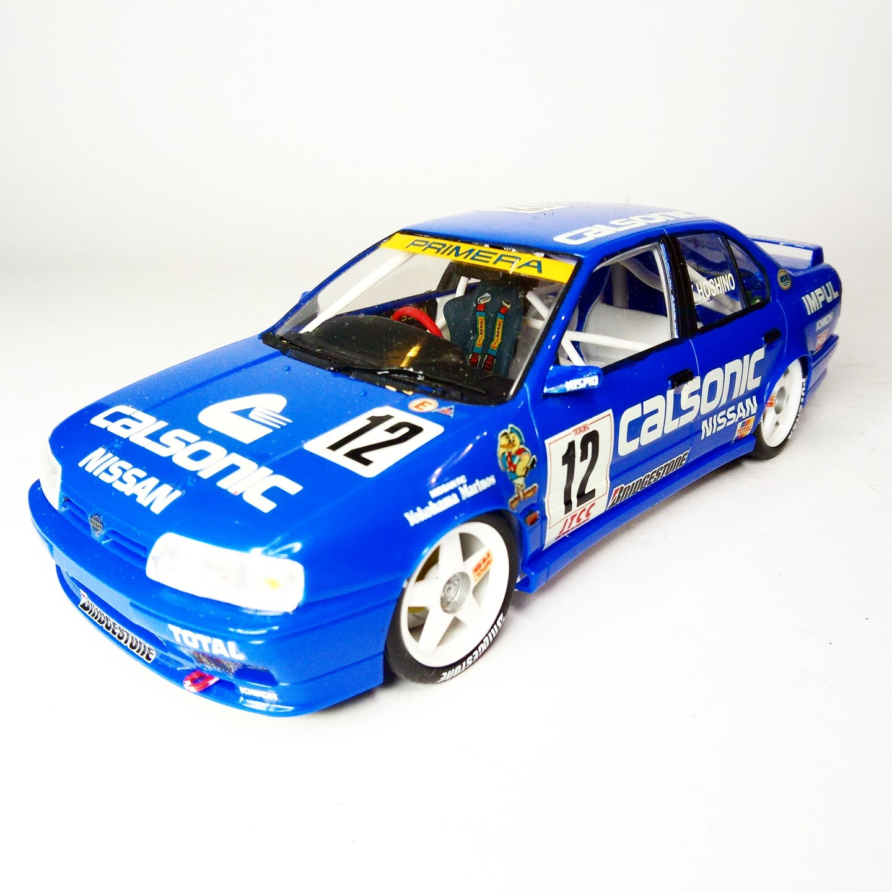
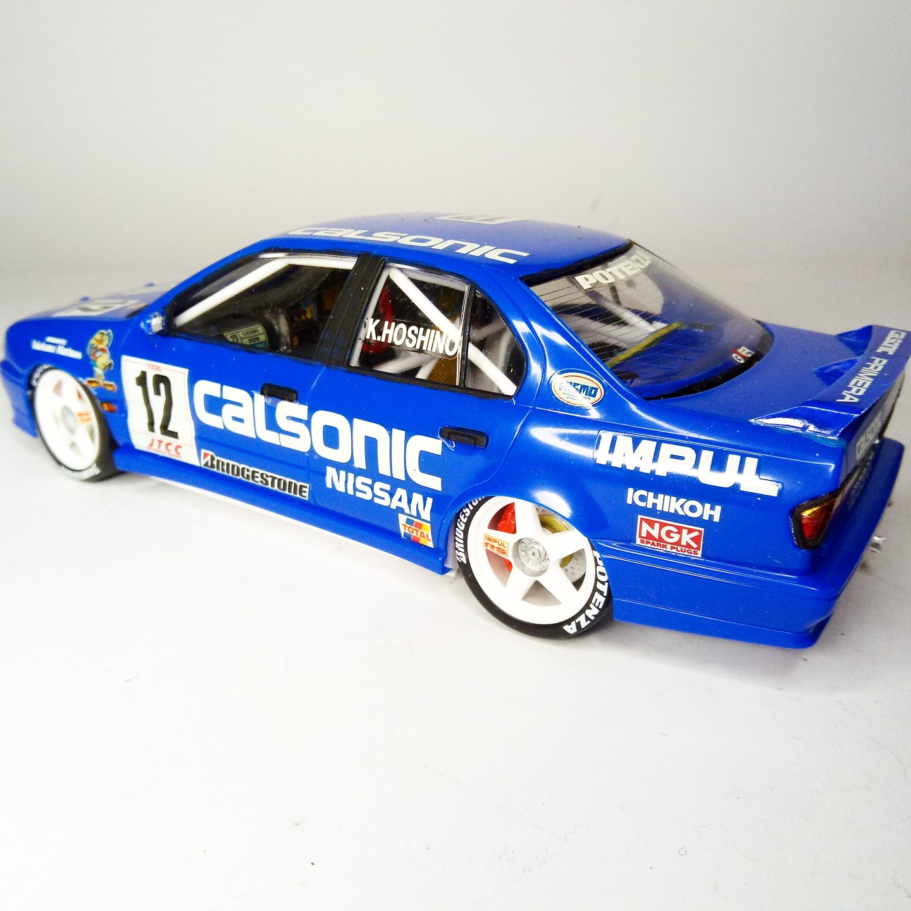

Auto e veicoli stradali · scale model archive
Calsonic Nissan Skyline R34
Calsonic Nissan Skyline R34 — Kit: Tamiya, Scale: 1/24. Raced in 1999 All Japan GT Championship #1/24 #Tamiya #Skyline

Photo gallery

English description
Raced in 1999 All Japan GT Championship
#1/24 #Tamiya #Skyline
Descrizione italiana
Corse nel campionato All Japan GT 1999.